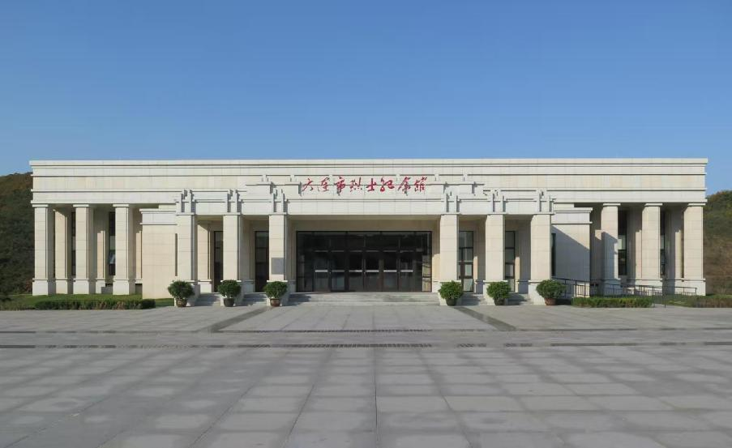

大连市烈士陵园位于风景秀丽的大连市高新园区龙王塘街道腊树沟山麓中部，占地面积7.75万平方米，东西依山、南望黄海、北邻旅顺南路，交通便利。陵园由大连市人民政府投资建设，大连市民政局承建，2013年9月开工，2015年8月建成并投入使用。
大连市烈士陵园担负着关向应、金伯阳、吴屏周等全市英烈事迹宣传与褒扬工作职能，园内安葬不同历史时期为国牺牲的500余位烈士的遗骨和骨灰，建有烈士墓区、纪念广场、纪念碑、纪念馆等设施。
纪念馆集中展示150余位英烈为实现民族独立与复兴、谋求人民解放和幸福而舍生取义的英勇事迹以及珍贵的照片、档案和遗物。整个园区依山傍水、树木繁茂，庄重典雅、宁静肃穆，是一座集纪念瞻仰、旅游休闲、文化园林于一体的新型烈士陵园，是广大市民缅怀革命先烈、弘扬民族精神的爱国主义教育基地。
 ← 返回大连地图